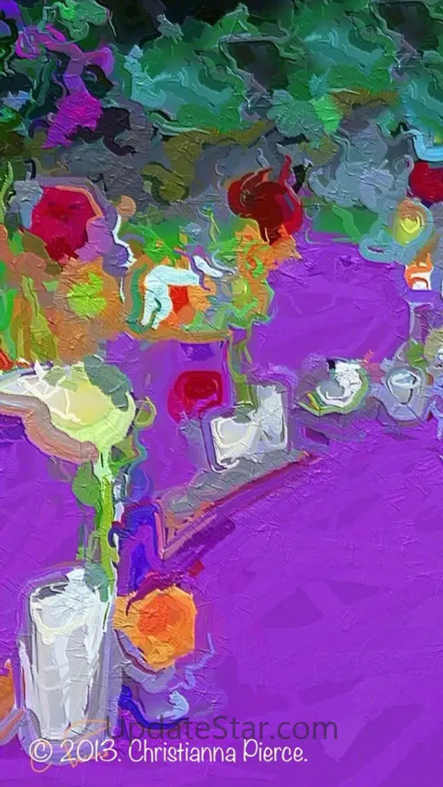

手机拍的照片一键变油画？Glaze 上手这三天我踩过的坑和真香时刻
朋友圈刷到油画质感照片好奇下载 Glaze，从安装到调画风到导出踩了几次小坑，但 Workshop 混合画风真的上头。真实体验讲透。
怎么会装这个的
说起来就是被朋友圈毒了。一个做插画的朋友发了一组照片——就是普通的街头随拍，经过处理之后变成了厚重的油画质感，笔触方向都看得出来。我问他用的什么软件，他甩了一句"Glaze，自己搜"，就没下文了。
搜了一下发现是个独立开发者做的安卓应用，专门把照片转成各种美术风格。不是那种一键套滤镜的简陋货，而是真正跑算法生成油画笔触的东西。我直接去Glaze 官网看了看介绍，画风列表里厚涂油画、印象派、水彩、素描……七八种内置风格，还有个叫 Workshop 的进阶模式能自己混合。行，装一个试试。
安装那点小事——四步走完我还松了口气
安卓装独立 APK 这个事吧，说起来简单但每次都有点提心吊胆，怕下载到乱七八糟的东西。好在官方下载给的流程特别清楚，四步：转存网盘、下 APK、放开一次"允许未知来源"、装完关掉权限。APK 才 12.81 MB，真的不大。
装完打开第一眼——界面比我想象的干净。顶部几个标签切换 Studio 和 Workshop，中间大画布区，底部是风格选择条。Studio 就是基础模式，选一种内置画风然后调参数；Workshop 是进阶，能玩变体和混合。我先从 Studio 开始。

用了这几天，三个最有感觉的地方
基础油画效果：真的有笔触，不是贴图
导入一张我周末在老巷子里拍的照片——砖墙、电线、一辆歪停的自行车。选了"厚涂油画"画风，点生成。
等了大概十秒（看手机性能，我的是骁龙 8 Gen 2，算是快的），出来的效果让我愣了一下。真的不是那种随便往原图上叠一层油画纹理贴图——画面里的砖墙每块砖的颜料方向都不一样，自行车的辐条被画成了弯曲的笔触，电线倒是保留了原本的锐利感。不是把照片"涂色"，是真的有东西在"画"。
这一点上 Glaze 和市面上其他"油画滤镜"的区别挺大的。后者大多是风格迁移的简化版，把颜色和纹理叠上去就完事了；Glaze 的算法似乎在模拟真正的绘画过程——笔触的方向、颜料的厚薄、边缘的处理，都在跑一遍。
Workshop 混合画风：这才是 Glaze 的灵魂
玩了两天基础画风之后我试着进了 Workshop。先开变体生成——选了厚涂油画作为基础，然后让它随机生成几个变体。出来的效果差不多，但细节上有变化：有的笔触更粗，有的暗角更重，有的饱和度稍低。像一个画家画同一场景画了五六张草稿。
然后我试了混合。选了厚涂油画 + 水彩晕染，比例大概 6:4。

出来的东西跟任何单一内置画风都不一样。保留了厚涂的笔触方向，但边缘变成了水彩那种柔化的晕染感，不像厚涂那样硬邦邦的，也不像纯水彩那样散。我又试了印象派 + 素描，色彩上是印象派的明亮，但线条保留了素描的锐利。这种混搭出来的质感真的很难撞款，朋友圈发出去好几个人问"这是什么软件做的"。
唯一的缺点是调混合比例需要点耐心。两种画风的权重拉条我大概滑了二十多次才找到自己满意的配比——但找到之后记得保存到个人调色板，下次直接用就行。
导出分辨率：差点踩了个反直觉的坑
第一次导出的时候看到两个选项：原始 和 大。我想当然地选了"大"——照片嘛，像素越高越好。结果等了半天才发现，我的手机是 5000 万像素的，Glaze 的"大"选项是把处理后的图像插值放大到 2100 万，我选"大"反而把像素从 5000 万降到了 2100 万。
后来去Glaze 文档翻了一下，才搞明白：高像素的原图永远选"原始"，"大"只给那些 800~1200 万像素的老手机用——因为老手机像素不够，插值放大到 2100 万之后打印 A4 海报会更清晰。这个逻辑确实挺反直觉的，我猜不少人第一次都会选错。
一个小插曲：老机型的崩溃问题
身边有人用的是 2019 年的老款安卓，下载了 Glaze 之后选"大"输出 5000 万像素的照片直接崩了。不是软件卡死，是系统直接把它杀了。查了一下，老机型内存有限，大尺寸照片经过算法处理再插值放大，内存占用瞬时飙升，扛不住就崩了。
不过解决方案也简单：别一次性拉满尺寸，直接选"原始"输出就行。老机型本身拍出来的照片像素也不高，选"原始"就够用了。真遇到崩的情况，关掉所有后台应用重试，成功率会高很多。
适合谁，不适合谁
适合： 想把手机照片变得有点艺术感的人——不管是发朋友圈、做小红书内容，还是偶尔想做点创作。Workshop 的混合画风对于内容创作者来说特别有用，能做出跟别人不一样的质感。
不适合： 追求一键出片的人——Glaze 不是那种选个滤镜直接保存的软件，混合画风需要试，参数需要调，要有点耐心。另外，如果你用的是特别老的安卓（比如 4GB 以下内存），大尺寸导出可能会崩，这点要有心理预期。
收尾
三天用下来，Glaze 给我的感觉是：它不是来抢"一键滤镜"市场的，是给那些愿意花点时间调一调、想做点不一样东西的人做的。Workshop 的混合功能是真的好玩，但也真的需要耐心试。
如果你也想试试，相关资料我同步到了三个仓库：GitHub 主库、Gitee 镜像、GitCode 同步，安装包和文档都在里面。